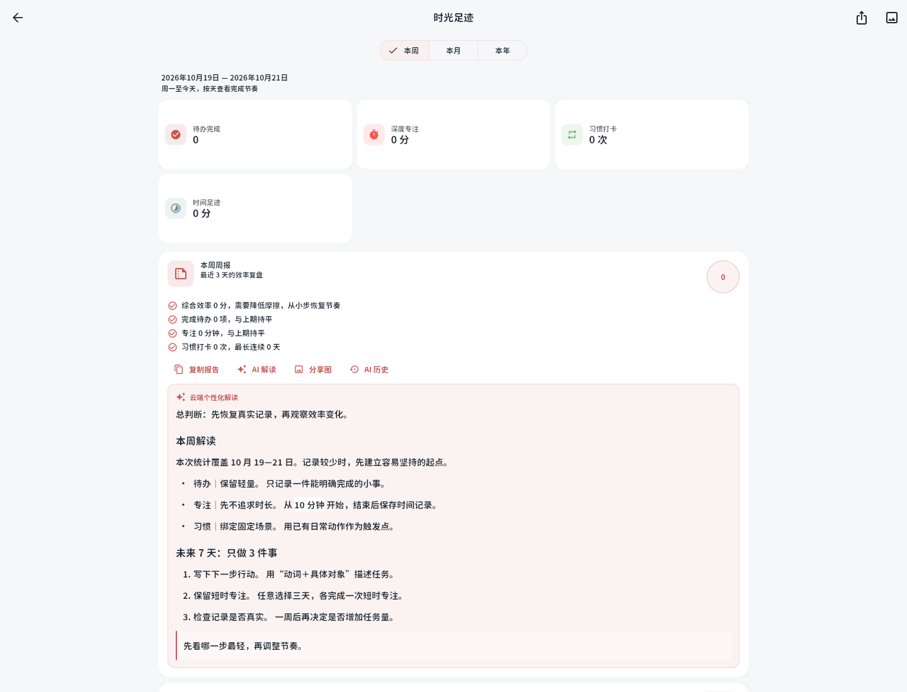
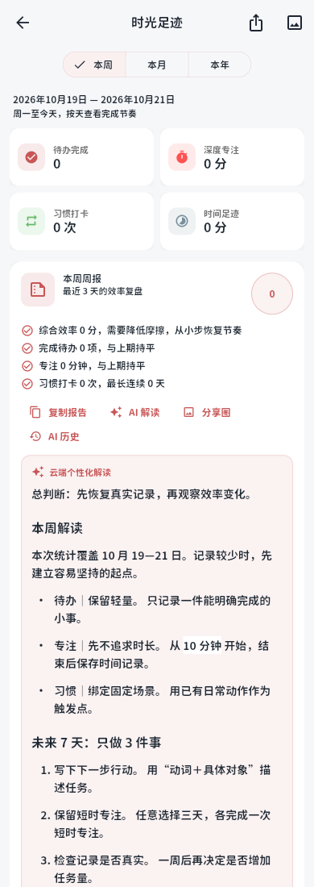
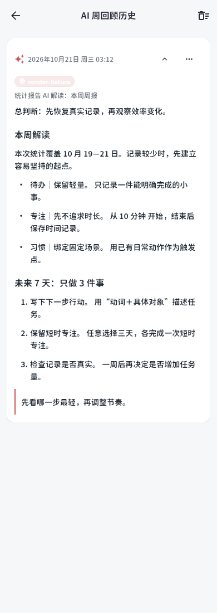
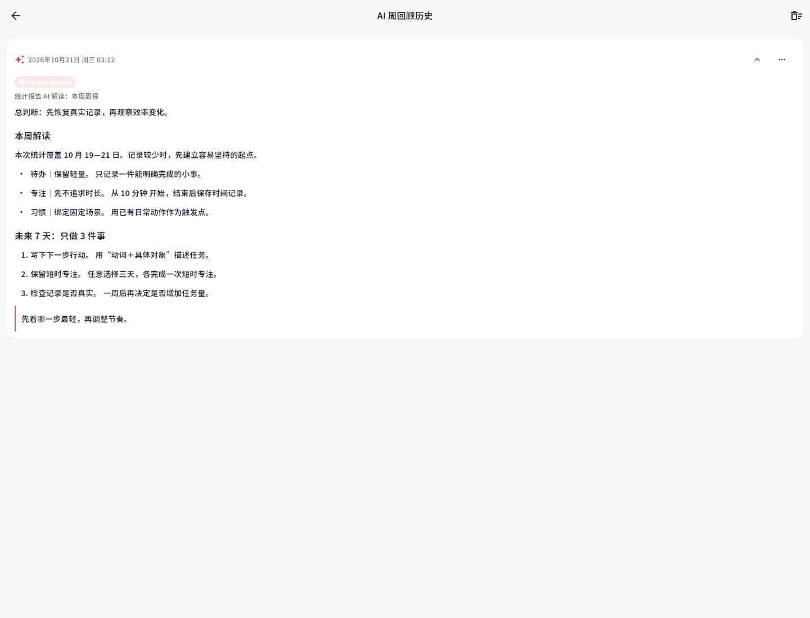

云端解读与 AI 历史 · Markdown 渲染
实际 Flutter Web 发布构建截图。标题、强调、列表、行内代码和引用按主题渲染，正文可选择复制；下图使用固定测试回复，不含个人数据，也未调用真实模型。



历史详情

实际 Flutter Web 发布构建截图。标题、强调、列表、行内代码和引用按主题渲染，正文可选择复制；下图使用固定测试回复，不含个人数据，也未调用真实模型。



